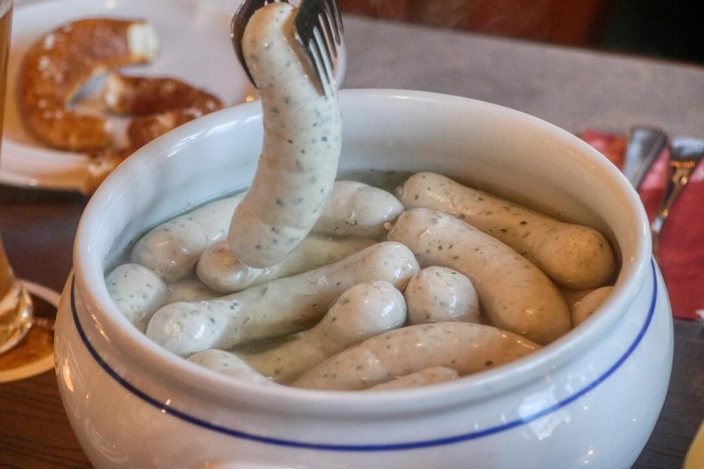
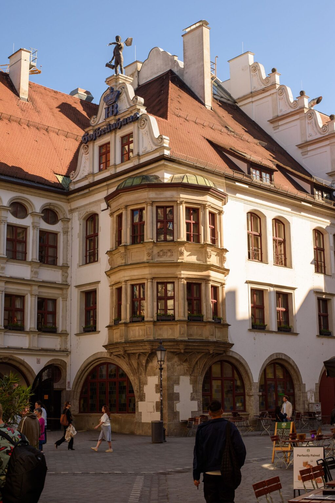

A personal recommendation of all things Bavarian, for non-Germans
Bavaria,explained.
Served warm.
What a Maß is, why the Weißwurst skin comes off, which beer hall is worth your one evening, and how to throw an Oktoberfest at home without a Bavarian rolling her eyes.
Written byResifor non-Germans
Start here · real guides
Guide 01 / 03

Food
Weißwurst: How to Eat Bavaria's White Sausage (Skin, Mustard and the Noon Rule)
by Resi Zauber
Cited · date-checked

Beer
Is the Hofbräuhaus Worth It? An Honest Look at Munich's Most Famous Beer Hall
by Resi Zauber
Cited · date-checked
Oktoberfest
Oktoberfest Without a Reservation: How the Unreserved Seats Work and When to Show Up
by Resi Zauber
Cited · date-checked
B
Bavarian Bistro
bavarianbistro.com
Bavaria, explained. Served warm.
Throw an Oktoberfest
The plan, the menu for twelve, the beer from US shelves
Go to Munich
Oktoberfest without a reservation, Bavaria by train
Not affiliated with the City of Munich or the Oktoberfest